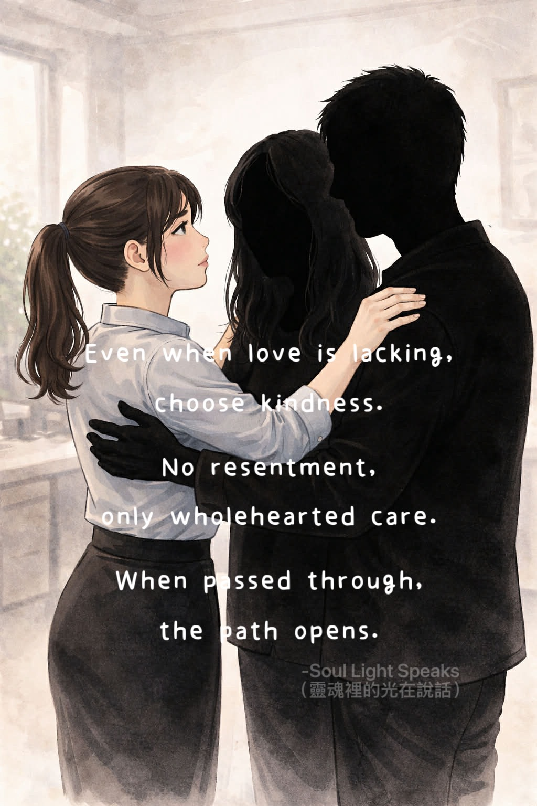

choose kindness.
No resentment,
only wholehearted care.
When passed through,
the path opens.
Not every parent comes
to “love their child.”
Some parents come
to be the most important lesson
in a child’s life.
I once heard a story
told by the person herself.
Her parents never truly loved her,
always favoring other children.
Yet she held no resentment
and never chose to cut ties.
She still cared for them faithfully.
Later, those favored children,
who grew up wealthy,
abandoned their parents,
leaving the responsibility to her.
She did not send them away,
nor ignore them.
She cared for them personally,
gave financial support,
and gave her heart fully.
The most remarkable part—
the more she showed kindness and devotion,
the smoother her own life became.
Opportunities appeared,
luck accumulated,
and eventually
she built considerable wealth
through these very chances.
Perhaps parents are
a compulsory lesson for most.
And “filial piety” (love and care for one’s parents)
may not be about receiving love in return,
but a path to let go,
transform,
and pass life’s tests.
Of course, some lessons
are too heavy.
That inner void may be
impossible to cross for now.
And that is okay—
no one should be blamed.
But if you can,
perhaps it’s worth trying—
Maybe, like in that story,
when your heart is no longer bound by resentment,
life will slowly begin
to flow in your favor.